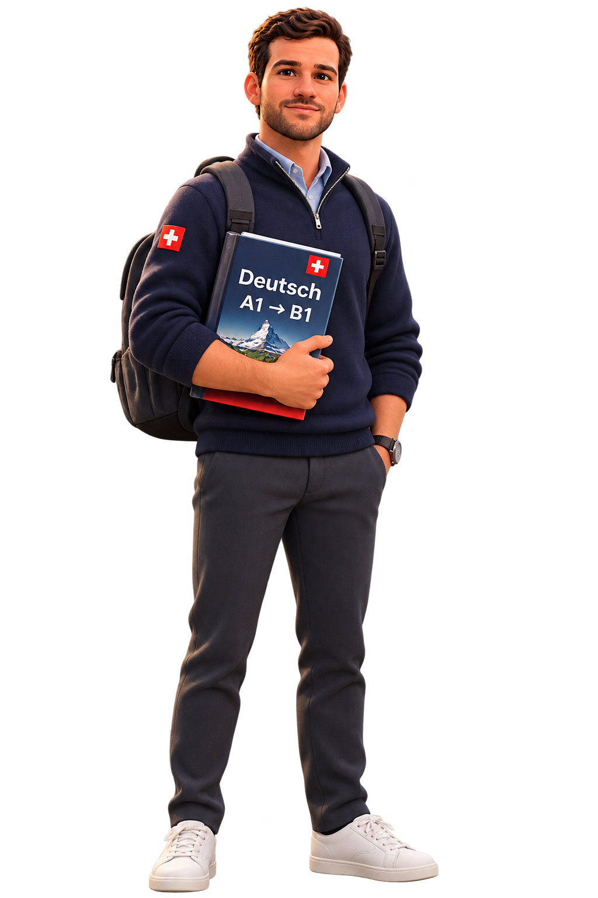

Los geht’s! ✨Giuseppe’s Journey to B1
Chapter 1 · A1 Intensive — 30 days
Study German directly on this website. A personal German-learning journey, starting with an intensive 30-day A1 course. Open any day to study grammar, vocabulary and interactive exercises directly on this page. A2 and B1 are the next chapters. All explanations are in English.
Days 1–30 now include grammar, vocabulary, examples and interactive practice. Some later lessons use repeated sentence patterns and need further enrichment with unique scenarios and audio.
0 of 30 lessons completed
Your learning roadmap
30 days · Lessons available
Next chapter · Coming later
Your goal · Coming later
Chapter 1 · Your 30 A1 lessons
Your first conversations in German
Four topics: greetings, personal pronouns, sein and haben. Includes 50 original exercises with automatic correction.
1. Grammar masterclass · 20 min
Greetings and introductions
Use Guten Morgen in the morning, Guten Tag in formal or neutral situations, and Guten Abend in the evening. Hallo and Tschüss are more informal. In Switzerland you will also hear Grüezi, especially in the German-speaking regions.
Ich heiße Anna. — My name is Anna.
Wie heißen Sie? — What is your name? (formal)
Wie heißt du? — What is your name? (informal)
Personal pronouns
German distinguishes informal singular du, informal plural ihr and formal Sie. Capitalization matters: sie can mean she or they, whereas Sie means formal you.
| German | English |
|---|---|
| ich / du | I / you (informal singular) |
| er / sie / es | he / she / it |
| wir / ihr | we / you (informal plural) |
| sie / Sie | they / you (formal) |
Sein — to be; haben — to have
Both verbs are irregular and essential. Memorize the complete conjugations.
| Pronoun | sein | haben |
|---|---|---|
| ich | bin | habe |
| du | bist | hast |
| er / sie / es | ist | hat |
| wir | sind | haben |
| ihr | seid | habt |
| sie / Sie | sind | haben |
Mini-dialogue
A: Guten Morgen! Wie heißen Sie?
B: Ich heiße Marco. Und Sie?
A: Ich heiße Anna. Sind Sie neu hier?
B: Ja, ich bin neu in Zürich.
A: Haben Sie heute Zeit?
B: Ja, ich habe Zeit.
2. Vocabulary · 10 min
Read each word, hide the English translation, then recall it aloud. Write five original sentences.
| German | English |
|---|
3. Interactive exercises · 25 min
Complete the core exercises first, then continue with additional practice. Short answers are checked automatically. You can retry any incorrect answer.
0 answered
4. Speaking, reading and review · 5+ min
Read the mini-dialogue from the Learn tab aloud three times. Then introduce yourself, say where you live and work, and ask a colleague their name using formal Sie.
Reading comprehension
Answer aloud: Where is Anna? Who is Marco? Is Marco in the office? At what time is the appointment?
Writing task
Write 60–80 words introducing yourself. Use sein and haben at least twice each, and write one formal question.
Your writing is saved locally in this browser. It is not automatically graded.